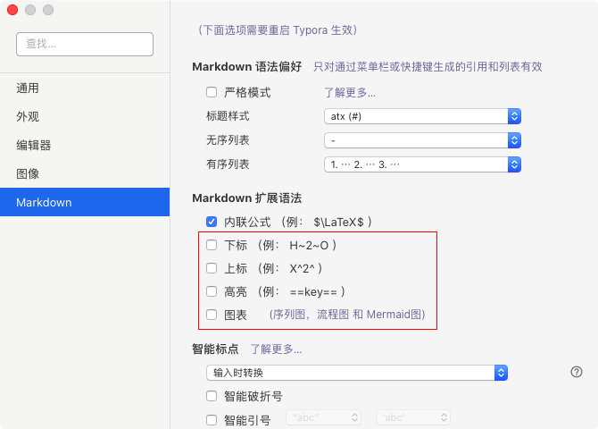

如何使用 Wiki¶
Wiki 书写使用 markdown 格式。本 wiki 使用 python-markdown 作为 markdown 的解释器，支持一些 markdown 的扩展语法。在本地编辑 markdown 文件时，推荐使用 VSCode 或者 Obsidian。
Warning
Typora正式版已经收费，且测试版在某些系统环境已不可用。
有任何问题可以在 https://github.com/chenggroup/chenggroup.github.io/issues 进行反馈。
文档中带有
*的部分可以略过。
对某篇 wiki 内容有疑问¶
请使用页面下方的评论区、登陆Github账号后进行评论。该部分基于giscus构建，可以自动创建一个discussion，从而提供方便的互动。此功能需要创建页面的贡献者手动开启。
如何上传 wiki¶
如果还不会 markdown 语法，可以先看 markdown 语法部分，能被识别为 wiki 的 markdown 文件应在文件的开头插入 YAML Front Matter。把自己的 markdown 文档上传到 wiki 上可以有两种方案，本质都是在使用 Github: 1. 上传文件至 Github 仓库 (推荐)；2. 由 wiki 网站 导向编辑页面。
上传文件至 github 仓库 (推荐)¶
推荐通过 pull requests 的方法来增加或修改 wiki 网站 上的 wiki。
1. Fork wiki 文档所在仓库¶
先 fork https://github.com/chenggroup/chenggroup.github.io ，然后进入 fork 成功后的仓库。
2. 创建新文件或上传本地文件¶
推荐在本地用 typora 等编辑器写好 markdown 后直接上传文件，文件请上传至 _wiki 目录 (master 分支)。也可以修改 fork 的仓库的 docs/wiki 下的文件，然后再提交 PR。
3. 设置导航¶
在上传新的文档后，需要手动在仓库首级的 mkdocs.yml 中设置导航。
例如在软件使用中增加 VASP 使用教程的话（假设放在 docs/wiki/software_usage/vasp.md），且希望放在 CP2K 和 DP-GEN 之间，请在 nav 中增加如下内容：
nav:
...
- Wikis:
...
- 软件使用:
...
- wiki/software_usage/Tips_for_LaTeX.md
- CP2K:
...
- wiki/software_usage/vasp.md # 新增导航
- wiki/software_usage/DP-GEN.md
...
...
4. 提交 PR¶
如何预览 wiki¶
预览 wiki 也有多种方案: 1. 利用 VSCode 或 Obsidian 进行预览（推荐） 2. 在本地启动 Mkdocs 服务 3. 使用 typora 等实时渲染
这里我们对后两种方式进行介绍
通过 Mkdocs 服务*¶
1. 下载网站源码至本地¶
git clone https://github.com/chenggroup/chenggroup.github.io.git
cd chenggroup.github.io
2. 安装 mkdocs-material 和 必要的 mkdocs 插件¶
pip install mkdocs-material \
mkdocs-macros-plugin \
mkdocs-static-i18n[material]
pip install mkdocs-git-revision-date-localized-plugin \
mkdocs-material-extensions
4. 启动 Mkdocs 服务¶
mkdocs serve
5. 编辑 wiki¶
把要预览的 wiki 移到 docs/wiki/ 目录下，或是直接编辑 docs/wiki/ 目录下的 markdown 文件。
6. 预览 wiki¶
等待片刻，打开浏览器访问 http://127.0.0.1:8000 ，即可进行实时预览。
通过 typora (注意已经收费)¶
使用 typora 编辑器可以很方便地实时渲染 markdown 文件。如果不使用本 wiki 中标注有 * 的 wiki 扩展语法 ，则可以大体上认为 typora 所渲染出的文档与直接查看 wiki 网站 的文档相差无几，基本仅存在显示风格上的差异。但要注意需更改 typora 的一些设置（见后文），避免和 wiki 所使用的 markdown 扩展功能发生冲突。
修改 markdown 拓展语法设置¶
需要关闭上下标、高亮以及图表的功能。

修改数学公式设置¶
需要关闭数学公式自动添加序号的功能。
插入图片¶
请把图片统一放在 docs/images/ 下，以确保无论何时这些图片都可用。
Markdown 语法¶
Markdown 是一种标记语言，和代码一样，可以用纯文本的形式来书写。其使用的常用标记符号不超过十个，可以让人专注于文字而不是排版，并且也可以方便地导出为 HTML、PDF 等格式。
基本语法¶

注意
插入图片时切勿使用本地路径，否则在 wiki 上无法查看。
可参考 markdown 教程 与 练习 来学习基本语法。
注意
要引用同一篇 wiki 中的小标题（二至六级标题）可以通过 [sub title](#sub-title) 来引用。不过需要注意，要把小标题中的空格用 - 代替，所有大写字母改成小写，且忽略 . , & 等特殊符号。
请注意，如被引用的链接中包含中文，Mkdocs 不能提供良好支持。请通过添加别名的方式来实现，比如要链接到1. Fork wiki 文档所在仓库，请在 #### 1. Fork wiki 文档所在仓库 后添加 { #1-fork-wiki-repo }:
#### 1. Fork wiki 文档所在仓库 { #1-fork-wiki-repo }
在引用时，请使用别名进行链接 [1. Fork wiki 文档所在仓库](#1-fork-wiki-repo)。
GFM 扩展语法¶
GFM(GitHub Flavored Markdown) 是 GitHub 所使用的 Markdown 扩展语法。
清单¶
- [ ] 未完成列表
- [x] 已完成列表
- 未完成列表
- 已完成列表
表情¶
:eyeglasses: :+1:


Wiki 扩展语法¶
标注 * 的部分可以不去注意
YAML Front Matter¶
加入标题¶
只有在 markdown 文件的头部加入 YAML Front Matter 部分，才能使你写的 wiki 展示在网页上。因此最简单的，请在 YAML Front Matter 中加入 title，如下所示：
---
title: getting-started
---
添加作者¶
在 YAML Front Matter 中加入 authors 即可添加作者，多个作者用 yaml 语法的列表表示：
---
title: getting-started
authors: one author
---
---
title: getting-started
authors:
- author1
- author2
---
开启评论功能¶
对创建页面的编辑者来说，通常情况下请开启评论功能、以便读者可以快速提交反馈或评论，即在 YAML Front Matter 部分增加一行：
---
...
comments: true
---
数学公式¶
数学公式可以用 LaTeX 语法来书写，两端用 $(一般用于行内公式) 或 $$(会使公式居中显示) 来标记，如 $E=mc^2$ 可表示 \(E=mc^2\) 。
$$
E[\rho] = T_s[\rho] + \int \mathrm{d}r\ v_{\rm ext}(r)\rho(r) + V_{H}[\rho] + E_{\rm xc}[\rho]
$$
要表示多行公式，需要使用 aligned，并要在行尾部加 \\。
$$
\begin{aligned} \dot{x} &= \sigma(y-x) \\
\dot{y} &= \rho x - y - xz \\
\dot{z} &= -\beta z + xy \end{aligned}
$$
若实现给公式编号等功能，可参照 LaTeX 的做法。
化学式与化学反应式¶
此功能通过 LaTeX 的 mhchem 插件来实现，使用上与数学公式输入相近，都需要通过 $ 或 $$ 来标记。
| 源码 | 化学式与化学反应式 |
|---|---|
$\ce{Mg(OH)2}$ |
\(\ce{Mg(OH)2}\) |
$\ce{CrO4^2-}$ |
\(\ce{CrO4^2-}\) |
$\ce{[Cu(NH3)4]^2+}$ |
\(\ce{[Cu(NH3)4]^2+}\) |
$\ce{CoCl2.6H2O}$ |
\(\ce{CoCl2.6H2O}\) |
$\ce{^{227}_{90}Th+}$ |
\(\ce{^{227}_{90}Th+}\) |
$\ce{C2H5-OH}$ |
\(\ce{C2H5-OH}\) |
$\ce{CH3CH=CH2}$ |
\(\ce{CH3CH=CH2}\) |
$\ce{HC#CH}$ |
\(\ce{HC#CH}\) |
$\ce{CaCO3 ->[900\,{}^{\circ}\mathrm{C}] CaO + CO2}$ |
\(\ce{CaCO3 ->[900\,{}^{\circ}\mathrm{C}] CaO + CO2}\) |
$\ce{H2PO4- <=>C[OH-][H+] H+ + HPO4^2-}$ |
\(\ce{H2PO4- <=>C[OH-][H+] H+ + HPO4^2-}\) |
上下标¶
一般情况下可以用 <sup></sup> 表示上标，用 <sub></sub> 表示下标，如 ai2-kit 可用 ai<sup>2</sup>-kit 表示。
提示¶
!!! tldr "title"
TLDR means too long, didn't read.
改变 tldr 即可使用不同的提示类型，比如
Use tldr for this.
TLDR means too long, didn't read
Use tip for this.
This is a tip.
Use info for this.
This is a piece of information, or you can use todo.
Use question for this.
This is a question.
Use warning for this.
This is a warning
Use danger for this.
This alerts danger!
Use success for this.
This alerts success
按钮*¶
[Subscribe to our newsletter](#){ .md-button }
目前支持按钮两种颜色方案的配置。
[default](#){ .md-button }
[primary](#){ .md-button .md-button--primary }
流程图*¶
流程图可以用来表示工作流或者步骤等：
``` mermaid
graph LR
A[Start] --> B{Error?};
B -->|Yes| C[Hmm...];
C --> D[Debug];
D --> B;
B ---->|No| E[Yay!];
```
graph LR
A[Start] --> B{Error?};
B -->|Yes| C[Hmm...];
C --> D[Debug];
D --> B;
B ---->|No| E[Yay!];引用本网站的其他 wiki¶
使用
[title](relavent/path/to/file.md)
即可在 wiki 中引用本网站的其他 wiki 。只需将 relavent/path/to/file.md 改成想要引用的 wiki 相对此文档的 相对路径。
比如，要想引用 如何使用 wiki 这篇 wiki，则只需把 relavent/path/to/file.md 换成 ../how_to_edit/howtodo.md。
Warning
注意这里推荐使用的是相对路径，可不改变同级目录结构。如需修改上级目录结构需要对应更改。
文档英文翻译¶
目前本 Wiki 采用 mkdocs-static-i18n 实现多语言支持，因而若需要编写翻译版本，仅需要在同一目录下增加一个后缀为 .en 的markdown文件。例如中文文档为 custom.md，则英文文档为 custom.en.md。
注意请将导言区的 title 内容翻译为英文。
若涉及导航栏中自定义栏目的翻译，请在 mkdocs.yml 中增加。以下给出一个实例：
nav:
- 主页: index.md
- 分类1:
- topic1/index.md
- topic1/item1.md
- 分类2: topic2/index.md
plugins:
- i18n:
languages:
- locale: en
default: true
name: English
- locale: fr
name: Français
nav_translations:
主页: Home
分类1: Topic 1
分类2: Topic 2
参考资料*¶
要使用更多功能，请参考mkdocs-material官方文档。
当然，想要快速获得支持，也可以联系作者或者 Open an issue 。